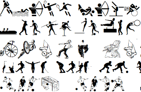

Vrste sportova
Postoje brojne podele sportova, i teško je napraviti potpuno tačno razgraničenje. Često se govori o olimpijskim sportovima, tj. onima koji su u programu zimskih ili letnjih Olimpijskih igara kao i o ostalim,
neolimpijskim sportovima. Postoje i sportovi kao što su moderni petoboj ili triatlon koju su u stvari skup nekoliko različitih sportova, dakle spadaju u posebnu kategoriju. Ipak, evo spiska sportova po grupama:
- Trkanje
- „Ljudski pogon“ (trčanje, plivanje...)
- Biciklizam, veslanje, kanu...
- motociklističke trke, jedrenje, trka s gliserima...
- Sa protivnikom
- Borilački (džudo, karate, boks, aikido...)
- Na terenu (tenis, badminton, odbojka...)
- Timski (fudbal, ragbi, vilbal, hokej hokej na travi...)
- Ostali takmičarski sportovi
- Pogađanje mete (Streljaštvo, golf, streličarstvo...)
- Ocenjivački sportovi (Gimnastika, konjički sport, skokovi u vodu, bodibilding...)
- Snaga (Dizanje tegova, troskok, bacanje kugle...)

Sportovi